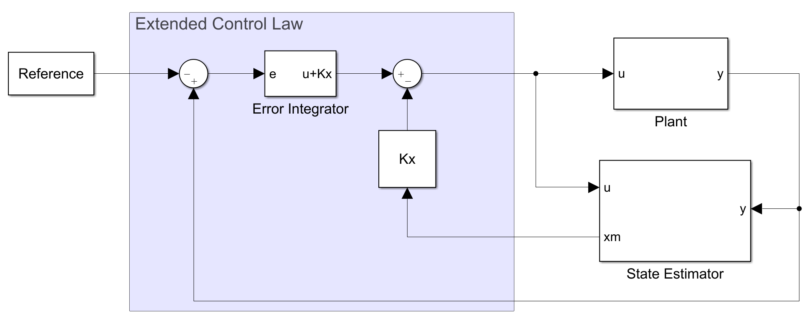
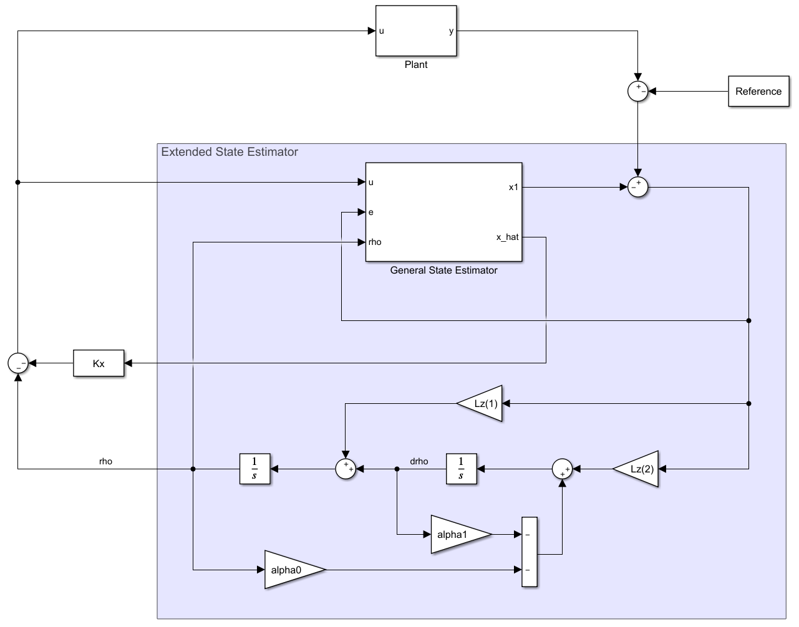

扩展控制律
设被控对象的状态空间表述为
\[\begin{split}\left\{ {\begin{array}{*{20}{l}}
{{\mathbf{\dot x}} = {A\mathbf{x}} + {B}u} \\
{y = {C\mathbf{x}} }
\end{array}} \right.\end{split}\]
定义跟踪误差 \(e=y-r\) 。将其代入参考信号的微分方程，有
\[\begin{split}\begin{aligned}
\ddot e + {\alpha _1}\dot e + {\alpha _0}e &= \ddot y + {\alpha _1}\dot y + {\alpha _0}y \\
&= {C}\left( {\ddot{\mathbf{x}} + {\alpha_1}\dot{\mathbf{x}} + {\alpha _0}{\mathbf{x}}} \right) \\
&= {C\mathbf{\xi }} \\
\end{aligned}\end{split}\]
这里定义了 \(\xi={\ddot{\mathbf{x}} + {\alpha_1}\dot{\mathbf{x}} + {\alpha _0}{\mathbf{x}}}\) ，考察它的动态，有
\[\begin{split}\begin{aligned}
\dot{\xi} &= \frac{\mathrm{d}}{\mathrm{d}t} \left( \ddot{\mathbf{x}} + \alpha_1 \dot{\mathbf{x}} +\alpha_0 \mathbf{x}\right) \\
&= \frac{\mathrm{d}^2}{\mathrm{d}t^2} \dot{\mathbf{x}} + \alpha_1 \frac{\mathrm{d}}{\mathrm{d}t} \dot{\mathbf{x}} + \dot{\mathbf{x}} \\
&=A\left( \ddot{\mathbf{x}} + \alpha_1 \dot{\mathbf{x}} +\alpha_0 \mathbf{x}\right)
+ B \left( \ddot{u} + \alpha_1 \dot{u} +\alpha_0 u\right) \\
&= A \xi + B \mu
\end{aligned}\end{split}\]
同样补充定义了 \(\mu = \ddot u + \alpha \dot u + \alpha_0 u\) 。
综上，利用误差和扩展的状态量构造误差空间（Error Space）
\[\begin{split}{\bf{\dot z}} = {{ A}_z}{\bf{z}} + {{B}_z}\mu =
\left[ {\begin{array}{*{20}{c}}
0&1&{0}\\\
{ - {\alpha _0}}&{ - {\alpha _1}}&{C}\\\
{0}&{0}&{ A}
\end{array}} \right]
\left[
\begin{array}{c}
e \\ \dot{e} \\ \xi
\end{array} \right]
+ \left[ {\begin{array}{*{20}{c}}
0\\\
0\\\
{B}
\end{array}} \right] \mu\end{split}\]
取状态反馈为 \(\mu = - {{K}_z}{\bf{z}} = - \left[ {\begin{array}{*{20}{c}} {{K_{e0}}}&{{K_{e1}}}&{{{K}_x}} \end{array}} \right]\bf{z}\) ，当上述误差收敛时，由于跟踪误差为零，系统的输出将跟随输入。
为了实现上述控制器，需要从 \(\mu\) 中求解系统输入 \(u\) ，这可以从 \(\mu\) 的定义中获得
\[\begin{split}\begin{gathered}
\ddot u + {\alpha _1}\dot u + {\alpha _0}u = - {{K}_z}{\mathbf{z}} = - {K_{e0}}e - {K_{e1}}\dot e - {K}_x\left( \ddot{\mathbf{x}} + {\alpha _1}\dot{\mathbf{x}} + {\alpha _0}{\mathbf{x}} \right) \\
\Updownarrow \\
\frac{{{{\text{d}}^2}}}{{{\text{d}}{t^2}}}\left( {u + {{K}_x}{\mathbf{x}}} \right) + {\alpha _1}\frac{{\text{d}}}{{{\text{d}}t}}\left( {u + {{K}_x}{\mathbf{x}}} \right) + {\alpha _0}\left( {u + {{K}_x}{\mathbf{x}}} \right) = - {K_{e0}}e - {K_{e1}}\dot e \\
\Downarrow \\
e \to u + {{K}_x}{\mathbf{x}}:\quad H(s) = - \frac{{{K_{e1}}s + {K_{e0}}}}{{{s^2} + {\alpha _1}s + {\alpha _0}}} \\
\end{gathered}\end{split}\]
利用微分方程的实现手段（传递函数或状态空间的标准实现），根据 \(e\) 求解 \(u + {{K}_x}{\mathbf{x}}\) ，然后与 \({{K}_x}{\mathbf{x}}\) 相减即可得到系统的输入信号 \(u\) 。
这种方法可以看作是对控制律的扩展，而状态估计器与一般的估计器并无大异，可以将这种方法命名为扩展控制律，其结构如下图所示。

扩展状态估计器
既然控制律可以利用已知的参考信号动态进行扩展，那么状态估计器也应当能够扩展。我们可以这样想：如果系统的输出与参考之间存在误差，说明系统的输入端存在没有被完全抵消的扰动 \(\rho\) ，如果能够对这个扰动进行估计，令 \(u=-K\mathbf{x}-\rho\) 就可以在控制器的输出端抵消这个扰动，从而减小跟踪误差。
从系统的输出向输入看，表现为各微分的组合，当参考信号 \(r\) 满足某个微分方程时， \(\rho\) 也一定会满足该微分方程，在本例中
\[\ddot{\rho} + \alpha_1 \dot{\rho} +\alpha_0 \rho = 0\]
类似扩展控制律，将扰动和系统状态合一起作为扩展状态，状态空间可表述为
\[\begin{split}\left\{ {\begin{array}{*{20}{l}}
{{\mathbf{\dot{z}}} = {{A}_z}{\mathbf{z}} + {{B}_z}u = \left[ {\begin{array}{*{20}{c}}
0&1&{\mathbf{0}} \\
{ - {\alpha _0}}&{ - {\alpha _1}}&{\mathbf{0}} \\
{B}&{\mathbf{0}}&{A}
\end{array}} \right]\left[ {\begin{array}{*{20}{c}}
\rho \\
{\dot{\rho} } \\
{\mathbf{x}}
\end{array}} \right] + \left[ {\begin{array}{*{20}{c}}
0 \\
0 \\
{B}
\end{array}} \right]u{\quad}} \\
{y = {{C}_z}{\mathbf{z}} = \left[ {\begin{array}{*{20}{c}}
0&0&{C}
\end{array}} \right]{\mathbf{z}}}
\end{array}} \right.\end{split}\]
其对应的扩展状态估计器为
\[\dot{\mathbf{\hat{z}}} = {{A}_z}{\mathbf{z}} + {{B}_z}u + {L}_z\left( {y - {{C}_z}{\mathbf{z}}} \right)\]
利用 \({{A}_z} - {{L}_z}{{C}_z}\) 的特征值设计使扩展状态估计器稳定，最后用 \(u=-K\hat{\mathbf{x}} - \hat{\rho}\) 即可完成整个控制器设计。本例中的闭环框图如下，状态估计器相对于普通的状态估计器增加了对扰动的建模，因此称为扩展状态估计器。
